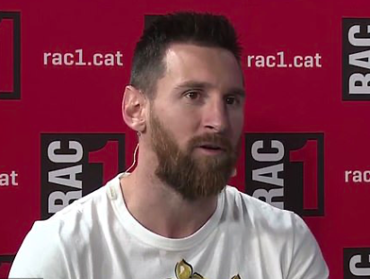

Messi was born the 06/24/1987 in the city of Rosario, Argentina. He started playing soccer at the age of 4 years and at six years old he was already in Newells old boys team. At the age of eleven his gransmother passed away and it really affected him because she was the reason he was having success. So now every time he scores a goal it is dedcated to her. Then at the same age he was detected with growth hormone deficiency. That is the reason he is kind of short and is 1.67m but he was supossed to be even shorter. He started a treatment for two years because his father inssuarnce covered it. However it was really expensive so he stoped at age of 13.
learn morewhat is unbelivable about Messi is his loyalty on and off the field. He has played for Barcelona his entired life and becamed one of the most famous people on the planet but he stayed loyal to her wife Anotnella which they met each other when both were 12 years and started dating since the age of 14 and have been toghether since them.
Messi´s 3 childs are thiago Messi who is 8 years old, Mateo Messi who is 5 years old and the youngest Ciro Messi who is 3 years old.
Messi and Ronaldo similiraties in terms of amount of goals individual titles and team titles is what puts them in a infinite discussion of who is a better player. Messi has more balon d´or messi by 2 he has more golden boots by 2. Although cristiano Ronaldo has one more champions league and 14 more golas in that competition
Messi wants out of barcelona due to the lack of sucess during the past years which cost the former president of barcelona to leave. He was arested couple of days later due to possible corruption.
if you want to learn more | divison | games | goals | assists |
|---|---|---|---|
| First division Spain | 511 | 467 | 191 |
| National cops | 99 | 68 | 38 |
| International cops | 158 | 128 | 38 |
| Argentina | 142 | 71 | 42 |